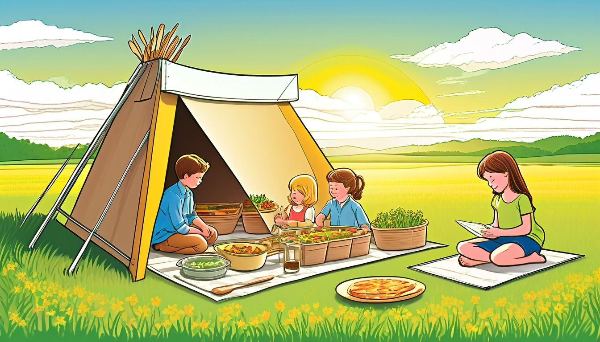

Sixteen accordion folder cards help writers sort a private fictional story arc into beginning, middle change, choice bridge, consequence, and ending return notes.
Audience: Families, homeschool groups, tutors, and adult-led writing tables for writers ages 7-11.
Format: 16 printable accordion folder story-arc cards plus adult guide tools, arc routines, take-home arc slips, and optional adult prompts
Family-safe printable writing pages for adult-led, offline story practice.
$81
Included
16 printable accordion folder story-arc cards
Adult setup guide
Fictional story-arc safety notes
Accordion folder arc moves
Family handoff notes
Pack reset notes
Six adult-led story-arc routines
Ten take-home story-arc slips
Eight optional adult prompts
Printable PDF and ZIP artifact
Adult guide
Story-arc coaching
Accordion Folder Story Arc Adult Guide
Setup: print the cards, blank slips, and one accordion folder sheet, then label the paper pockets before writing begins: ____________________.
Beginning pocket: help the writer choose one pretend fact, object, place, or character note that starts the story arc: ____________________.
Middle change pocket: move one paper note forward when something gentle shifts in the fictional story world: ____________________.
Choice bridge: place a folded bridge slip between the middle change pocket and the consequence note so the arc movement stays visible: ____________________.
Ending return: use the final pocket for one detail that comes back calmly near the finish, then add a reset note behind it: ____________________.
Keep the whole activity adult-led, made-up, offline, paper-only, and broad enough for invented details only: ____________________.
Use one accordion folder story-arc card at a time. Keep every choice broad, invented, paper-only, and screen-free.
World menu
Sixteen story-arc card worlds
Pick a world image, then shape one fictional story draft with a pretend accordion folder story-arc card.
Ages 7-9
Acorn Avenue Errand Office
Ages 7-9
Button Bakery Map Mix-Up
Ages 7-8
Teacup Town Weather Window
Ages 7-9
Sticker Station Mail Cart
Ages 7-9
Spoon Ferry Lunchbox Harbor

Ages 8-10
Solar Oven Picnic Station
Ages 7-9
Paperclip Plaza Parcel Day
Ages 7-9
Penny Path Compass Shop
Ages 8-10
Tidepool Timekeepers Lab
Ages 8-10
Rain Gauge Railway
Ages 8-10
Compost Clock Workshop
Ages 8-10
Seed Library Map Room
Ages 8-10
Moss Message Observatory
Ages 10-11
Clue Label Tower Museum
Ages 10-11
Compass Craft Academy
Ages 8-10
Greenhouse Gear Garden
Story-arc routines
Choose the accordion folder story arc routine
short folder start
Beginning Pocket Sort
The adult opens the accordion folder to the beginning pocket and places one blank note inside: ____________________.
The child chooses one invented starter detail for the first pocket: ____________________.
The adult asks what the story reader should know first in this pretend world: ____________________.
The child writes or dictates the beginning pocket note on paper: ____________________.
The beginning pocket starts the story arc with: ____________________.
middle movement pass
Middle Change Lift
The adult rereads the beginning pocket note and points to the middle change pocket: ____________________.
The child chooses one small made-up change that can move the story arc forward: ____________________.
The adult asks how that change makes the pretend character notice something new: ____________________.
The child writes the middle change note and tucks it into the pocket: ____________________.
The middle change pocket moves the story because: ____________________.
bridge planning pass
Choice Bridge Fold
The adult places one folded choice bridge slip between the middle change pocket and the next paper note: ____________________.
The child says one gentle choice the pretend character can make next: ____________________.
The adult asks what the choice connects from the middle change to the consequence note: ____________________.
The child writes the choice bridge line across the folded slip: ____________________.
The choice bridge connects the change to this next move: ____________________.
cause-and-result pass
Consequence Note Chain
The adult lays the consequence note after the choice bridge so the folder shows the next arc step: ____________________.
The child explains what happens because of the pretend choice: ____________________.
The adult keeps the consequence small, safe, and useful for the fictional arc: ____________________.
The child writes one consequence note and places it after the bridge: ____________________.
The consequence note follows the choice because: ____________________.
ending return pass
Ending Return Pocket
The adult opens the ending return pocket and rereads one earlier folder note: ____________________.
The child chooses one detail from the beginning or middle that can return near the finish: ____________________.
The adult asks how the returning detail helps the story feel closed on paper: ____________________.
The child writes the ending return note and tucks it into the final pocket: ____________________.
The ending return pocket brings back this detail: ____________________.
folder reset pass
Reset Note Close
The adult checks the folder order: beginning pocket, middle change pocket, choice bridge, consequence note, and ending return: ____________________.
The child taps one pocket that should be remembered for the next paper pass: ____________________.
The adult writes a reset note that names where to restart in the accordion folder: ____________________.
The child closes the folder after adding one final pencil reminder: ____________________.
The reset note says to restart with: ____________________.
Take-home story arc slips
Try one story arc later
Take-home story arc slip
Beginning Pocket Slip
Adult: open the beginning pocket and ask for one invented starter detail: ____________________.
Child: my beginning pocket note says: ____________________.
Next paper step: place the note in the first accordion folder pocket: ____________________.
Take-home story arc slip
Middle Change Slip
Adult: point from the beginning pocket to the middle change pocket: ____________________.
Child: the small pretend change is: ____________________.
Next paper step: move the arc forward with one new note: ____________________.
Take-home story arc slip
Choice Bridge Slip
Adult: place a folded choice bridge between the middle change and the consequence note: ____________________.
Child: the pretend choice on my bridge is: ____________________.
Next paper step: connect the choice to what happens next: ____________________.
Take-home story arc slip
Consequence Note Slip
Adult: ask what happens because of the made-up choice: ____________________.
Child: the consequence note says: ____________________.
Next paper step: place the consequence after the choice bridge: ____________________.
Take-home story arc slip
Ending Return Slip
Adult: reread one earlier pocket note before opening the ending return pocket: ____________________.
Child: the detail that comes back is: ____________________.
Next paper step: write how the returning detail helps close the arc: ____________________.
Take-home story arc slip
Reset Note Slip
Adult: choose one pocket that should guide the next paper session: ____________________.
Child: my reset note begins with: ____________________.
Next paper step: tuck the reset note behind the ending return pocket: ____________________.
Take-home story arc slip
Pocket Order Slip
Adult: lay the folder notes in order from beginning pocket to ending return: ____________________.
Child: the pocket order I see is: ____________________.
Next paper step: put one note back in the pocket where it belongs: ____________________.
Take-home story arc slip
Object Return Slip
Adult: ask which pretend object can travel through the story arc: ____________________.
Child: the object I will bring back is: ____________________.
Next paper step: place the object note in the ending return pocket: ____________________.
Take-home story arc slip
Gentle Fork Slip
Adult: offer two calm pretend choices for the bridge slip: ____________________.
Child: the choice I pick is: ____________________.
Next paper step: write one consequence note after the choice: ____________________.
Take-home story arc slip
Arc Close Slip
Adult: point to the beginning pocket and ask what should feel settled by the end: ____________________.
Child: the story arc feels settled when: ____________________.
Next paper step: write the ending return note, then add a reset note: ____________________.
Optional adult prompts
Optional adult-led offline prompt: the beginning pocket opens with ____________________.
Optional adult-led offline prompt: the middle change pocket now says ____________________.
Optional adult-led offline prompt: the choice bridge asks the character to choose ____________________.
Optional adult-led offline prompt: the consequence note follows because ____________________.
Optional adult-led offline prompt: the ending return brings back ____________________.
Optional adult-led offline prompt: the reset note reminds us to restart with ____________________.
Optional adult-led offline prompt: the accordion folder order today is ____________________.
Optional adult-led offline prompt: one paper-only story arc move to keep is ____________________.
Story Arc Card 1 | Ages 7-9 | anchor an acorn errand beginning, carry one desk change, bridge a helper choice, show a small result, and return to the first folder clue
Acorn Avenue Errand Desk Story Arc Card
Acorn Avenue Errand Office
Adult setup: Adult: place an accordion folder, blank paper, pencil, and one pretend acorn errand slip near the writer before starting: ____________________.
Writer: sort the acorn errand into a beginning pocket, middle change pocket, choice bridge pocket, result pocket, and ending return pocket: ____________________.
Beginning
Beginning: write who finds the acorn errand slip and what first desk clue starts the arc: ____________________.
Middle change
Middle change: add one small change, such as a missing clip, new stamp mark, or shifted folder flap: ____________________.
Choice bridge
Choice bridge: choose how the helper handles the new folder clue with a paper-only action: ____________________.
Consequence
Consequence: write the gentle story result of that choice at the errand desk: ____________________.
Ending return
Ending return: bring back the first acorn slip or folder flap so the arc feels connected: ____________________.
Arc folder note
Arc folder note: label one accordion folder pocket with the beginning clue, middle change, or ending return: ____________________.
Quiet option: fill only the beginning clue and ending return blanks for the acorn errand: ____________________. Later paper line: start another Acorn Avenue errand arc with one folder clue and one return note: ____________________.
Story Arc Card 2 | Ages 7-9 | move a button-map mixup from first clue to middle change, choice bridge, result, ending return, and folder note
Button Bakery Map Mixup Story Arc Card
Button Bakery Map Mix-Up
Adult setup: Adult: set out blank paper, a pencil, the accordion folder, and a pretend button map made only for this story: ____________________.
Writer: make the map mixup begin with one button marker, change in the middle, and return to the first marker at the end: ____________________.
Beginning
Beginning: write which helper finds the mixed-up button map and what marker starts the story arc: ____________________.
Middle change
Middle change: add one new paper symbol that makes the map point differently: ____________________.
Choice bridge
Choice bridge: choose whether the helper follows the old marker, the new symbol, or a folded map corner: ____________________.
Consequence
Consequence: write the story result that happens because the helper chose one map clue: ____________________.
Ending return
Ending return: bring back the first button marker in a calmer, clearer way: ____________________.
Arc folder note
Arc folder note: tuck a map-mixup note into the pocket named beginning, middle, choice, result, or return: ____________________.
Quiet option: draw or write only the first button marker and the ending return marker: ____________________. Later paper line: make another button-map arc with one mixed-up symbol and one return marker: ____________________.
Story Arc Card 3 | Ages 7-8 | show a weather-window beginning, one middle sky change, a choice bridge, gentle result, ending return, and folder note
Teacup Town Weather Window Story Arc Card
Teacup Town Weather Window
Adult setup: Adult: place the card, blank paper, pencil, and accordion folder beside a pretend teacup-window sketch: ____________________.
Writer: write the weather-window story as a beginning sign, middle change, choice bridge, result, and return: ____________________.
Beginning
Beginning: write what the teacup watcher first sees at the window, such as a paper cloud tag or tiny flag: ____________________.
Middle change
Middle change: let the window sign shift once, with a new color, tilt, or note: ____________________.
Choice bridge
Choice bridge: choose how the watcher responds on paper to the changed window sign: ____________________.
Consequence
Consequence: write the small story result that follows from the watcher's choice: ____________________.
Ending return
Ending return: bring back the first cloud tag, cup sill, or flag so the ending echoes the start: ____________________.
Arc folder note
Arc folder note: place one weather-window note in the pocket for beginning, middle change, choice, result, or return: ____________________.
Quiet option: fill the beginning sign and ending echo, then pause the folder work: ____________________. Later paper line: start another teacup-window arc with one paper weather sign that changes once: ____________________.
Story Arc Card 4 | Ages 7-9 | carry a sticker-cart beginning through one mail mix-up, bridge a choice, show a result, and return to the first sort card
Sticker Station Mail Cart Story Arc Card
Sticker Station Mail Cart
Adult setup: Adult: set the accordion folder, blank paper, pencil, and pretend sticker sort cards on the table: ____________________.
Writer: sort the mail-cart story into beginning, middle change, choice bridge, result, ending return, and folder note blanks: ____________________.
Beginning
Beginning: write which cart helper finds the first sticker card and what it seems to mean: ____________________.
Middle change
Middle change: add one change, such as a swapped sticker color, bent card corner, or new cart bell note: ____________________.
Choice bridge
Choice bridge: choose how the helper sorts the sticker card after the change: ____________________.
Consequence
Consequence: write the story result that follows when the helper sorts the card: ____________________.
Ending return
Ending return: bring back the first sticker color or cart bell note with a new meaning: ____________________.
Arc folder note
Arc folder note: file one sticker-station arc note under beginning, middle, choice, result, or return: ____________________.
Quiet option: write only the first sticker card and what it means at the end: ____________________. Later paper line: make another sticker-cart arc with a beginning card, one change, and one return note: ____________________.
Story Arc Card 5 | Ages 7-9 | move a spoon-ferry harbor beginning into a lunchbox middle change, bridge a helper choice, show a result, and return to the first dock note
Spoon Ferry Lunchbox Harbor Story Arc Card
Spoon Ferry Lunchbox Harbor
Adult setup: Adult: place blank paper, pencil, accordion folder, and a pretend spoon-ferry dock note beside the card: ____________________.
Writer: guide the spoon ferry from the first dock note through one middle change, one choice, one result, and one ending return: ____________________.
Beginning
Beginning: write who spots the spoon ferry and what first lunchbox-harbor signal starts the arc: ____________________.
Middle change
Middle change: add one gentle shift, such as a tilted dock tag, folded flag, or changed ferry token: ____________________.
Choice bridge
Choice bridge: choose what the ferry helper does with the changed token on the paper dock: ____________________.
Consequence
Consequence: write the story result after the helper uses the changed token: ____________________.
Ending return
Ending return: bring back the first dock note or folded flag in the final harbor moment: ____________________.
Arc folder note
Arc folder note: place the spoon-ferry beginning, middle change, choice, result, or return note in a folder pocket: ____________________.
Quiet option: fill only the dock beginning and ending return notes: ____________________. Later paper line: start another spoon-ferry harbor arc with one dock signal and one returning token: ____________________.
Story Arc Card 6 | Ages 8-10 | use a solar-oven station beginning, a middle gauge change, a choice bridge, a result, an ending return, and an accordion folder note
Solar Oven Picnic Station Story Arc Card
Solar Oven Picnic Station
Adult setup: Adult: set blank paper, pencil, accordion folder, and a pretend solar-oven gauge card on the table: ____________________.
Writer: keep the solar-oven station story on paper by moving from first gauge note to change, choice, result, and return: ____________________.
Beginning
Beginning: write the first gauge note at the picnic station and name the helper who notices it: ____________________.
Middle change
Middle change: add one paper change to the gauge, such as a new shade mark, flap angle, or station tag: ____________________.
Choice bridge
Choice bridge: choose how the helper adjusts the pretend paper plan after the gauge changes: ____________________.
Consequence
Consequence: write the story result that follows from the helper's paper plan: ____________________.
Ending return
Ending return: bring back the first gauge note so the station ending connects to the start: ____________________.
Arc folder note
Arc folder note: file the gauge beginning, middle change, choice, result, or return note in the accordion folder: ____________________.
Quiet option: write only the first gauge note and the ending return note: ____________________. Later paper line: make another solar-oven station arc with one pretend gauge change and one return note: ____________________.
Story Arc Card 7 | Ages 7-9 | fold a beginning clue into the ending return
Paperclip Plaza Parcel Day Story Arc Card
Paperclip Plaza Parcel Day
Adult setup: Adult: set out the card, one blank page, and three folder pocket labels for beginning, middle change, and ending return: ____________________.
Writer: make up a parcel helper, a plaza parcel, and a clue tag that can come back at the end: ____________________.
Beginning
Beginning: write who finds the paperclip-handled parcel and what tiny symbol is on its tag: ____________________.
Middle change
Middle change: show how the same symbol appears on two plaza counters but means a different job at each one: ____________________.
Choice bridge
Choice bridge: choose whether the helper opens the parcel at the table or follows the best symbol match on paper: ____________________.
Consequence
Consequence: write what changes in the plaza because of that choice, such as a clearer key, calmer parcel cart, or sorted notes: ____________________.
Ending return
Ending return: bring back the first tag symbol and show how it finally points to the right parcel place: ____________________.
Arc folder note
Arc folder note: tuck one parcel tag note into the accordion folder pocket that matches its story arc job: ____________________.
Quiet option: adult names the parcel tag, and the writer fills only the beginning and ending return blanks: ____________________. Take-home line: continue a paper-only plaza story by carrying one parcel clue from beginning to ending return: ____________________.
Story Arc Card 8 | Ages 7-9 | sort arc notes into beginning, middle, and ending pockets
Penny Path Compass Shop Story Arc Card
Penny Path Compass Shop
Adult setup: Adult: place the accordion folder beside a blank compass note and point to the beginning, middle, and ending pockets: ____________________.
Writer: invent a button compass, a folded errand slip, and one helper choice that changes the path of the story: ____________________.
Beginning
Beginning: write how the helper borrows the button compass and what the folded slip asks them to find: ____________________.
Middle change
Middle change: make the compass needle point toward a kinder next step instead of the expected direction: ____________________.
Choice bridge
Choice bridge: choose whether the helper trusts the moving needle or writes a new paper map of each kind turn: ____________________.
Consequence
Consequence: write what changes after the choice, such as a steadier compass note, a clearer path card, or a thankful mailbox row: ____________________.
Ending return
Ending return: bring back the folded slip and show how its first errand is answered in the final sentence: ____________________.
Arc folder note
Arc folder note: sort one compass clue into the folder pocket where it belongs in the story arc: ____________________.
Quiet option: adult points to the compass note, and the writer adds only one middle change sentence: ____________________. Take-home line: build another paper-only compass shop story by saving one beginning slip and one ending return note: ____________________.
Story Arc Card 9 | Ages 8-10 | carry one tidepool question through the middle
Tidepool Timekeepers Lab Story Arc Card
Tidepool Timekeepers Lab
Adult setup: Adult: set out a blank tide note, the accordion folder, and one pencil mark for the beginning clue pocket: ____________________.
Writer: create a tidepool helper, a lab work spot, and a tide question that changes but stays connected: ____________________.
Beginning
Beginning: write the first tide question the helper notices beside the shell-shadow jars: ____________________.
Middle change
Middle change: show one tide mark, pebble note, or seaweed flag that does not match the helper's first guess: ____________________.
Choice bridge
Choice bridge: choose whether the helper checks the pebble notebook, compares two shell shadows, or moves one note to a new pocket: ____________________.
Consequence
Consequence: write how the helper's choice changes the lab plan without leaving the pretend tidepool work spot: ____________________.
Ending return
Ending return: bring back the first tide question and answer it with one calm detail from the middle change: ____________________.
Arc folder note
Arc folder note: place one tidepool clue in the accordion folder pocket that shows where the story arc has moved: ____________________.
Quiet option: adult reads the tide question, and the writer writes only the ending return sentence: ____________________. Take-home line: keep a paper-only tidepool lab arc steady by carrying one question from beginning to ending: ____________________.
Story Arc Card 10 | Ages 8-10 | use a paper gauge note to show what changed
Rain Gauge Railway Story Arc Card
Rain Gauge Railway
Adult setup: Adult: set out the accordion folder, one blank gauge note, and a paper rail card for story-arc sorting: ____________________.
Writer: invent a small railway helper, a rain gauge note, and one track change that moves the story forward: ____________________.
Beginning
Beginning: write what the helper sees on the rain gauge ticket before the tiny railway starts its paper trip: ____________________.
Middle change
Middle change: show how a track switch sends the sample car toward the wrong rail card or weather post: ____________________.
Choice bridge
Choice bridge: choose whether the helper checks the gauge again, redraws the track plan, or writes a careful rail note: ____________________.
Consequence
Consequence: write what changes because of the choice, such as a corrected sample car, calmer weather flags, or a clearer gauge mark: ____________________.
Ending return
Ending return: bring back the first rain gauge ticket and show how the final rail note explains it: ____________________.
Arc folder note
Arc folder note: tuck the gauge note into the folder pocket that names its beginning, middle, or ending job: ____________________.
Quiet option: adult circles the gauge ticket, and the writer fills only the choice bridge blank: ____________________. Take-home line: continue a paper-only railway arc by saving one gauge note and returning to it at the end: ____________________.
Story Arc Card 11 | Ages 8-10 | turn one compost-clock mix-up into a calm ending
Compost Clock Workshop Story Arc Card
Compost Clock Workshop
Adult setup: Adult: place the accordion folder beside a blank layer dial note and choose one beginning pocket for the workshop clue: ____________________.
Writer: make up a workshop helper, a leaf-layer clock, and one slow change that can return at the ending: ____________________.
Beginning
Beginning: write the first clock mix-up, such as a leaf layer appearing on the wrong dial mark: ____________________.
Middle change
Middle change: show how a worm tunnel map, soil jar, or layer flag reveals that the clock is reading the stack in a new order: ____________________.
Choice bridge
Choice bridge: choose whether the helper rebuilds the layer dial, labels a new pocket, or asks the workshop map to explain the order: ____________________.
Consequence
Consequence: write how the workshop changes after that choice, such as a steadier dial, clearer layer note, or calmer soil shelf: ____________________.
Ending return
Ending return: bring back the first clock mix-up and show how it now makes sense in the final workshop note: ____________________.
Arc folder note
Arc folder note: file one compost-clock clue in the accordion folder pocket that shows its place in the arc: ____________________.
Quiet option: adult names the layer dial, and the writer writes only one middle change detail: ____________________. Take-home line: keep a paper-only compost-clock arc by returning one beginning mix-up as the ending answer: ____________________.
Story Arc Card 12 | Ages 8-10 | plant one beginning detail that returns later
Seed Library Map Room Story Arc Card
Seed Library Map Room
Adult setup: Adult: keep the work private and offline, place this card, blank paper, pencil, and an accordion folder on the table: ____________________.
Writer: with the adult, sort the made-up seed map story into beginning, middle change, choice, result, and ending return: ____________________.
Beginning
Beginning: write one seed packet mark, map-room shelf, or careful map clue that starts the story arc: ____________________.
Middle change
Middle change: show how the map room changes when one pretend seed marker slides to a new paper square: ____________________.
Choice bridge
Choice bridge: let the map keeper choose whether to follow the shelf clue or the seed packet clue next: ____________________.
Consequence
Consequence: write what the choice changes in the paper map room, such as a new shelf label or crossed path: ____________________.
Ending return
Ending return: bring back the beginning seed packet mark and explain how it helps the final map note make sense: ____________________.
Arc folder note
Arc folder note: tuck one seed map beginning detail, middle change, and ending return reminder into separate accordion pockets: ____________________.
Quiet option: write only the seed packet mark, one map-room change, and the ending return note: ____________________. Take-home line: keep the Seed Library Map Room arc in the paper folder and add one returning clue later: ____________________.
Story Arc Card 13 | Ages 8-10 | keep the middle change connected to the opening
Moss Message Observatory Story Arc Card
Moss Message Observatory
Adult setup: Adult: keep the work private and offline, set out this card with paper, pencil, and an accordion folder labeled for the observatory: ____________________.
Writer: with the adult, begin with one moss message, change it in the middle, and return to it at the ending: ____________________.
Beginning
Beginning: write the first moss message beside the observatory lens and name who notices it: ____________________.
Middle change
Middle change: make the moss message shift shape, direction, or meaning while staying tied to the opening clue: ____________________.
Choice bridge
Choice bridge: let the observer choose one paper-only way to compare the first message with the changed one: ____________________.
Consequence
Consequence: write what the observer understands after comparing the two moss marks in the observatory: ____________________.
Ending return
Ending return: bring back the first moss message and show how the middle change made it clearer: ____________________.
Arc folder note
Arc folder note: place the opening moss clue, the changed clue, and the ending return note in order inside the accordion folder: ____________________.
Quiet option: write one opening moss clue and one middle change that still connects to it: ____________________. Take-home line: add one more Moss Message Observatory arc note that returns to the first clue on paper: ____________________.
Story Arc Card 14 | Ages 10-11 | bring a clue-label choice back at the end
Clue Label Tower Museum Story Arc Card
Clue Label Tower Museum
Adult setup: Adult: keep the work private and offline, provide this card, blank paper, a pencil, and an accordion folder for arc notes: ____________________.
Writer: with the adult, write how one museum label choice starts small, changes the middle, and returns at the end: ____________________.
Beginning
Beginning: introduce the tower museum case, the unclear clue label, and the character who must decide what it means: ____________________.
Middle change
Middle change: add one new exhibit detail that makes the clue label harder or more interesting to understand: ____________________.
Choice bridge
Choice bridge: let the character choose which clue label to trust and write why that choice moves the arc forward: ____________________.
Consequence
Consequence: write how the chosen label changes the next museum step, such as which case opens on paper: ____________________.
Ending return
Ending return: bring the chosen clue label back and explain what it means after the character sees the final case: ____________________.
Arc folder note
Arc folder note: file the unclear label, the choice, and the returned label in accordion folder order: ____________________.
Quiet option: write only the unclear label, the chosen label, and the ending meaning: ____________________. Take-home line: keep the Clue Label Tower Museum arc private in the paper folder and add one new label clue later: ____________________.
Story Arc Card 15 | Ages 10-11 | use a compass note to keep the arc pointed at one pretend goal
Compass Craft Academy Story Arc Card
Compass Craft Academy
Adult setup: Adult: keep the work private and offline, place this card beside paper, pencil, and an accordion folder for compass notes: ____________________.
Writer: with the adult, choose one pretend compass goal and let each story-arc part point back to it: ____________________.
Beginning
Beginning: write the compass craft goal, the first direction note, and the character who wants to solve it: ____________________.
Middle change
Middle change: make one compass point change, wobble, or reveal a new craft mark that complicates the goal: ____________________.
Choice bridge
Choice bridge: let the character choose between two compass notes and explain how the choice keeps the arc aimed at the goal: ____________________.
Consequence
Consequence: write what happens to the craft project because of the chosen compass note: ____________________.
Ending return
Ending return: bring back the first compass goal and show whether the final paper note points closer to it: ____________________.
Arc folder note
Arc folder note: sort the compass goal, changed point, choice note, and ending return into the accordion folder: ____________________.
Quiet option: write the compass goal, one changed point, and one ending return sentence: ____________________. Take-home line: save the Compass Craft Academy arc in the paper folder and add one new direction note later: ____________________.
Story Arc Card 16 | Ages 8-10 | reset the accordion folder with one ending return note
Greenhouse Gear Garden Story Arc Card
Greenhouse Gear Garden
Adult setup: Adult: keep the work private and offline, set out paper, pencil, this card, and an accordion folder for gear-garden arc pieces: ____________________.
Writer: with the adult, move the gear garden story from first problem to changed middle, choice, result, and calm return: ____________________.
Beginning
Beginning: write the first greenhouse gear detail, such as a turning wheel, label tag, or garden crank that starts the arc: ____________________.
Middle change
Middle change: show one gear-garden part changing position so the character has to rethink the next paper step: ____________________.
Choice bridge
Choice bridge: let the character choose one gentle repair, reset, or note-check that links the middle to the ending: ____________________.
Consequence
Consequence: write what changes in the greenhouse gear garden after that choice, using only made-up story details: ____________________.
Ending return
Ending return: bring back the first gear detail and write the reset note that closes the story arc: ____________________.
Arc folder note
Arc folder note: place the beginning gear detail, middle change, choice, result, and reset note into accordion order: ____________________.
Quiet option: write only the first gear detail, the changed part, and the reset note: ____________________. Take-home line: keep the Greenhouse Gear Garden arc in the paper folder and add another ending return note later: ____________________.